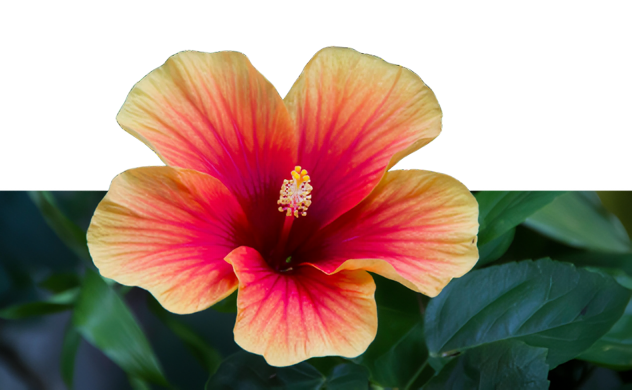

The Philippines is one of the world’s most biologically rich and diverse nations, earning a place among the 17 megadiverse countries globally. Its more than 7,600 islands are home to a wide range of ecosystems — from tropical rainforests and mangroves to coral reefs and mountain ranges — each supporting unique forms of life. This natural variety has led to the evolution of countless endemic species found nowhere else on Earth.
Philippine wildlife is not just remarkable in number but also in its role within the ecosystem and cultural identity. Animals like the Philippine eagle and tarsier have become powerful national symbols, while lesser-known species contribute silently to pollination, soil health, and ecological balance. However, many of these species are threatened by habitat loss, pollution, and climate change — making awareness and conservation more important than ever.
The Philippine archipelago is home to an extraordinary range of animal species, many of which are endemic to specific islands and habitats. These creatures reflect the ecological uniqueness and diversity of the nation. Each animal tells a story of evolution and adaptation of Philippine natural heritage.
The binturong, or “bearcat,” is a rare tree-dwelling mammal known for its popcorn-like scent. It can be found in the lush forests of Palawan.
Draco rizali, or Rizal’s flying lizard, is a small gliding reptile that thrives in forest canopies. It is commonly found in Luzon’s forested regions.

The Philippine eagle is the country’s national bird, admired for its size and regal appearance. It soars above the rainforests of Mindanao.

The pilandok, or Philippine mouse-deer, is a tiny hoofed mammal known for its shy nature. It inhabits the dense forests of Balabac Island, Palawan.
The Sulu hornbill is a critically endangered bird recognizable by its large bill and black plumage. It is native to the forests of Tawi-Tawi in the Sulu Archipelago.

The Samar cobra is a venomous species with a distinct hood and defensive behavior. It can be found in the rainforests of Samar Island.

The tamaraw is a small, stocky buffalo species unique to the Philippines. It inhabits the grassy slopes of Mount Iglit–Baco National Park in Mindoro.
The Philippine tarsier is one of the world’s smallest primates, famous for its large, expressive eyes. It resides in the forests of Bohol.

The Philippines is home to over 10,000 species of flowering plants, many of which are found nowhere else in the world. From the massive Rafflesia to the delicate Sampaguita, Philippine flora reflects the country’s ecological richness and cultural soul. These plants don't just beautify its landscapes — they nourish traditions, medicine, and meaning.
The Banaba tree is known for its striking purple flowers and use in traditional herbal remedies. It thrives in the warm plains of Pampanga in Central Luzon.
The Gumamela, a bright ornamental flower, is valued for both its beauty and healing properties. It flourishes in the gardens of Laguna in Southern Luzon.
The Ilang-Ilang tree produces fragrant yellow-green flowers used in perfumes and essential oils. It is native to the lush forests of Quezon in Southern Luzon.

The Narra tree, the national tree of the Philippines, is admired for its strong wood and golden blossoms. It is commonly found in the fertile lands of Nueva Ecija in Central Luzon.

The Rafflesia is the world’s largest flower, famous for its distinct scent. It grows deep within the forests of Davao del Norte in Mindanao.

The Rosal, or Philippine gardenia, is cherished for its white petals and sweet fragrance. It is often cultivated in the gardens of Batangas in Southern Luzon.

The Sampaguita, the national flower of the Philippines, symbolizes purity and devotion. It is widely cultivated in Bulacan in Central Luzon.

The Waling-Waling, often called the “Queen of Philippine Orchids,” boasts large, vibrant blossoms. It is native to the rainforests of Davao del Sur in Mindanao.